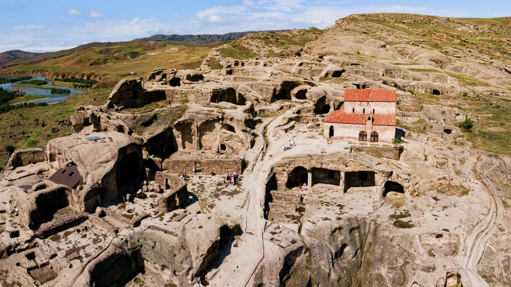

თუ გინდა, ნახო ტაძარი ცაში, იმერეთში, ჭიათურასთან ახლოს, სოფელ კაცხში უნდა ჩახვიდე. კაცხის სვეტი მარტო ისტორიული ძეგლი კი არა, ბუნების ძეგლიცაა - აქ, მიწიდან 40 მ სიმაღლეზე, კირქვის სვეტის თავზე გასული საუკუნის 40-იან წლებში V-VI საუკუნეების ეკლესიებისა და სხვა ნაგებობების ნაშთი აღმოაჩინეს.
კაცხი სვანური სიტყვაა და მწვერვალს აღნიშნავს. ამჟამად კაცხის სვეტზე აგებულია ეკლესია, სადაც განდეგილი ბერი მოღვაწეობს და ვიზიტორებისთვის ასვლა ნებადართული არ არის.
სვეტის მიმდებარედ X-XI საუკუნეების კაცხის ტაძარი დგას. სვეტის ძირში ადრე შუა საუკუნეების ეკლესიის კედლებია შემორჩენილი. სვეტის გარშემო კლდეებში კი სამალავები და გამოქვაბულებია აღმოჩენილი.
თუ კავკასიის ერთ-ერთი უძველესი დასახლების ნახვა გსურს, უფლისციხისკენ უნდა აიღო გეზი
ეს კლდეში ნაკვეთი ქალაქია გორის აღმოსავლეთით, სადაც ადრინდელი ბრინჯაოს ხანის არქეოლოგიურ და ხუროთმოძღვრულ ძეგლთა ჯგუფია დაცული.
აქ ნახავ გასაოცარი დაგეგმარების მქონე კლდეში ნაკვეთ ქუჩებსა და მოედნებს, არხებს, გვირაბებს, გალავნებს, სხვადასხვა დანიშნულების ნაგებობებს. აქ აღმოჩენილი არტეფაქტები ხელოვნების მუზეუმში ინახება. მათ შორის საინტერესოა მძივები, ბეჭდები, ჭურჭლის ფრაგმენტები, ერთ-ერთი მნიშვნელოვანი აღმოჩენა კი ტერაკოტის ქანდაკებაა ქალღმერთის გამოსახულებით, რომელიც ძვ.წ. IV-III საუკუნეებითაა დათარიღებული.